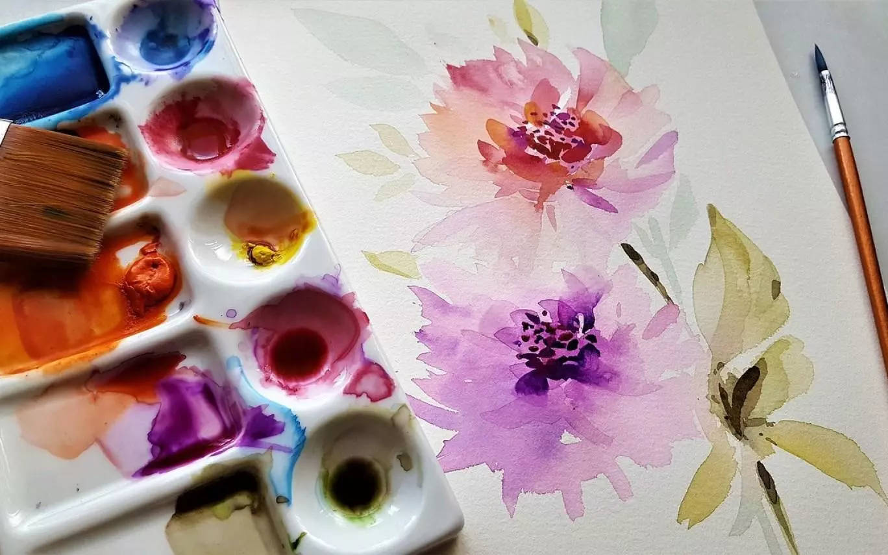
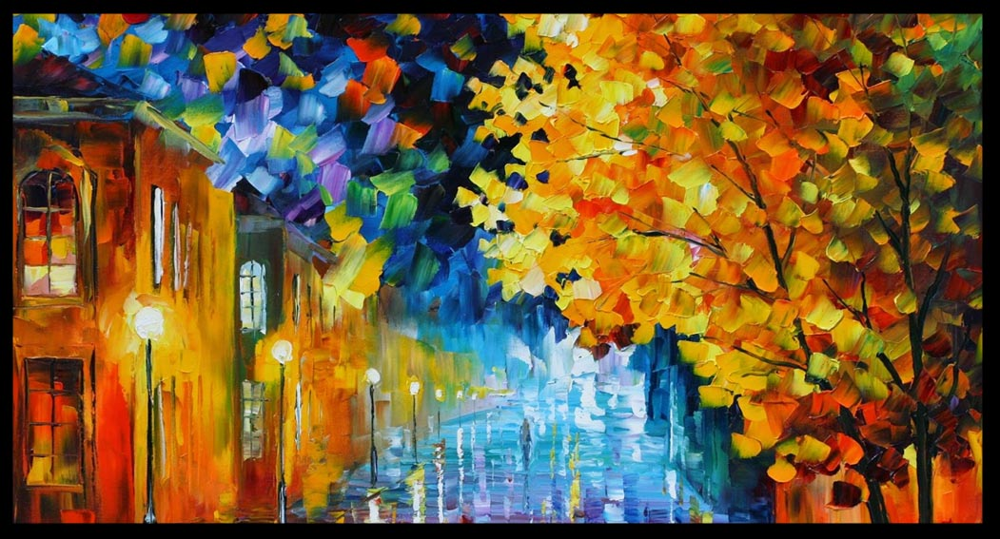
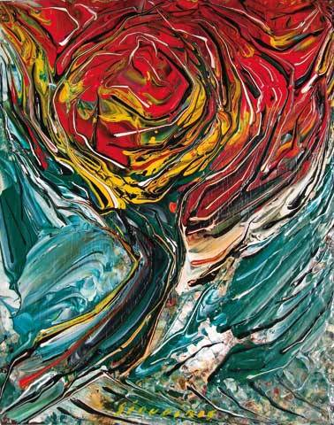
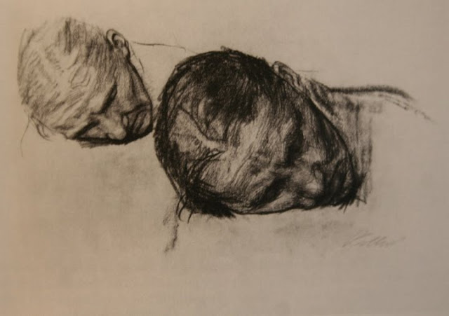
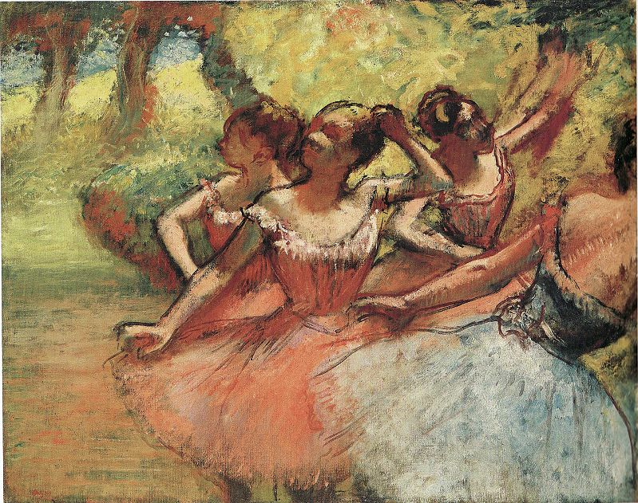
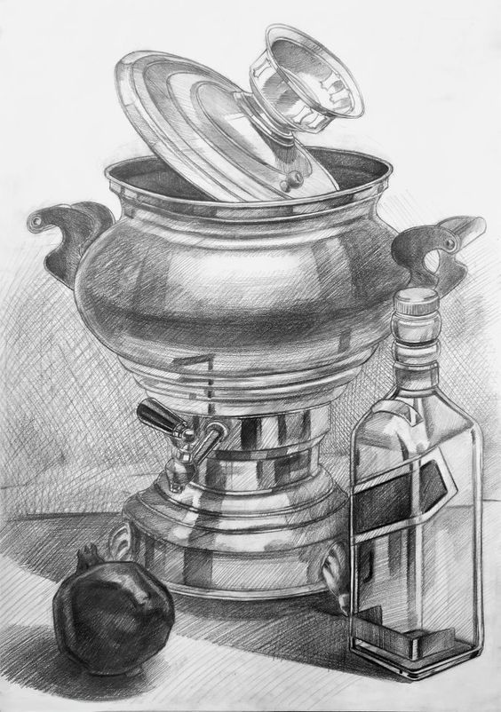

Acuarela
Tipo: Pintura con agua y pigmentos
La acuarela se caracteriza por su transparencia y la suavidad de los tonos. Se aplica en capas ligeras sobre papel especial.
Óleo
Tipo: Pintura con aceites y pigmentos
El óleo permite colores intensos y mezclas suaves. Es ideal para retratos y paisajes detallados por su textura rica.
Acrílico
Tipo: Pintura de secado rápido
El acrílico combina la intensidad del óleo con la rapidez de la acuarela. Se seca en minutos y permite crear efectos modernos.
Carboncillo
Tipo: Dibujo en blanco y negro
El carboncillo es una técnica tradicional usada para bocetos y retratos. Permite trazos suaves y sombreados profundos.
Tinta china

Tipo: Dibujo con tinta líquida
Se utiliza con pincel o pluma. Es común en el arte oriental y los cómics por su precisión y contraste fuerte.
Pastel
Tipo: Dibujo con barras de pigmento
El pastel ofrece colores vibrantes y una textura aterciopelada. Se usa en retratos y paisajes con efectos suaves.
Lápiz de grafito
Tipo: Dibujo a lápiz
Es la técnica más básica y versátil. Se usa para bocetos, ilustraciones y estudios de luz y sombra.
Digital

Tipo: Dibujo con herramientas digitales
El arte digital combina creatividad y tecnología. Se realiza con tabletas gráficas y programas de diseño.